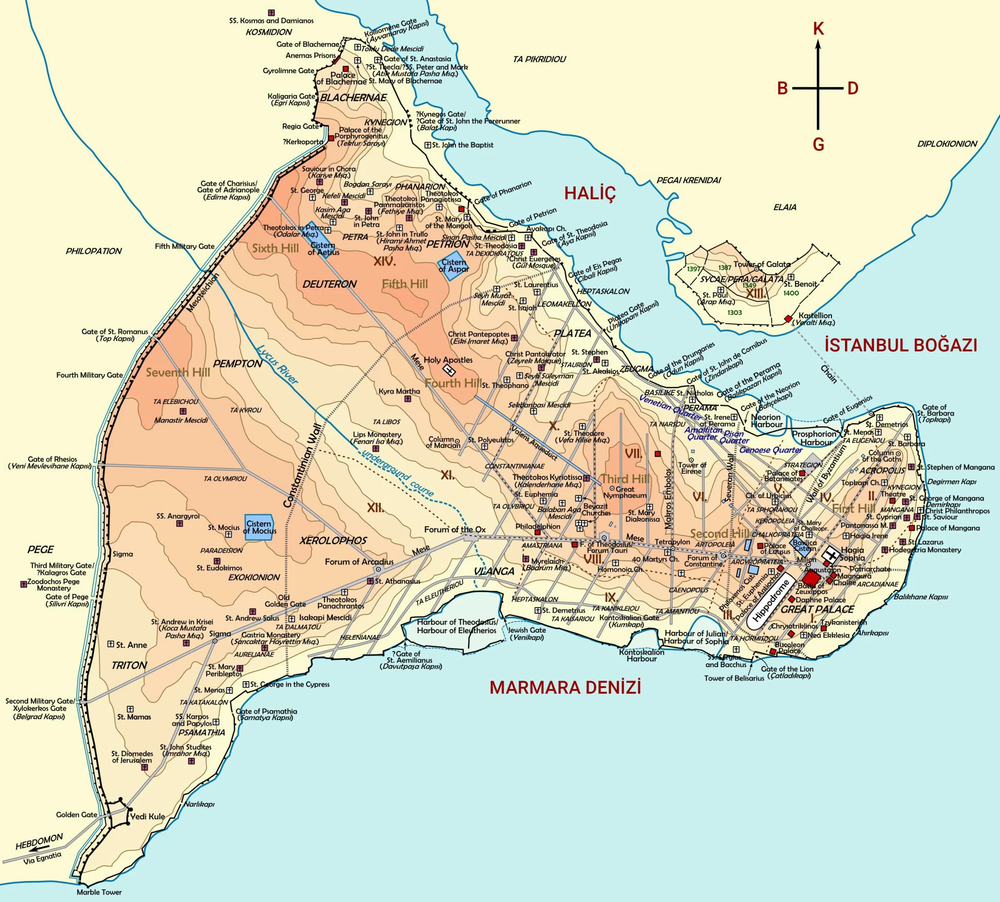

.png)
İstanbul Kim Tarafından ve Ne Zaman Kurulmuştur?
İstanbul dünyanın en büyük, en önemli ve en güzel şehirlerinden birisidir. Boğazın iki yakasına yayılmış, olağanüstü güzellikteki tepeler, şehrin sakinlerini ve ziyaretçilerini sürekli büyüler. Dünya tarihinin en önemli komutanlarından ve devlet adamlarından biri olan Napolyon, “Eğer dünya tek bir devlet olsaydı, İstanbul başkent olurdu” demiştir. Bu gerçekten de doğrudur. Dolayısıyla, İstanbul’un önemini anlayabilmemiz için tarihe bakmamız gerekir.
.webp)
Byzantion
İstanbul tarihi binlerce yıl öncesine dayanır, ama bilinen ilk yerleşim MÖ. 7. yy’da gerçekleşmiştir. O dönemde Antik Yunan yarımadasındaki şehir devletleri arasında Megara isminde bir şehir devleti vardır. Bu şehir devletleri ekonomik ve kültürel olarak o dönemin en ileri devletleridir. Ekonomik gelişimlerindeki en önemli nedenlerden biri, kolonileşme çabalarıdır. Megara şehir devletinin kralı olan Byzas, yeni bir koloni bulmak için Delphi’de bulunan Apollon (Yunan mitolojisindeki bilgelik tanrısı) tapınağına gidip kahine, kolonileşmek için en uygun yerin neresi olduğunu danışır. Kahin kendisine, körler ülkesinin karşısında yer alan topraklara gitmesi gerektiğini söyler. Byzas bu ülkeyi bulmak için yola çıkar. Bugünkü tarihi yarımadaya (Sultanahmet bölgesi) geldiğinde, Anadolu yakasında bugünkü Kadıköy’ün olduğu bölgede bir yerleşim yeri (Chalcedon) olduğunu görür. Bu kadar güzel bir bölge varken insanların karşı kıyıda yerleşim yeri kurmalarından şaşkınlık duyar. Karşıda yaşayan insanların kör olduğunu düşünür. Kahinin söyledikleri aklına gelir ve bulunduğu bölgeye koloni kurar. Bu koloni kralın adını alır ve Byzantion / Byzantium olur.
Konstantin ve Konstantinopolis
Byzantion, MS. 4. yy’a kadar önemsiz bir şehir olarak kalır. Byzantion’un kaderi 312 yılında Konstantin’in İmparator olmasıyla değişir. Konstantin’in annesi Helena iyi bir Hristiyan’dır. Oğluna sürekli Hristiyanlıktan bahseder ve onun için dua eder. Konstantin, taht kavgaları sırasındaki son savaşından önce, gördüğü bir görüm dolayısıyla Hristiyanlığa sıcak bakmaya başlar. Sonrasında Hristiyanlara dini özgürlük verecek olan Milano Fermanı’nı imzalar. Bu fermanla Hristiyanların 300 yıl boyunca uğradıkları zulüm sona erer ve bu Konstantin’in en büyük başarılarından biridir. Konstantin’in büyük bir projesi daha vardır. Bu proje, imparatorluğun başkentini başka bir yere taşımaktır. Bunun nedeni Roma’nın kuzeyden gelebilecek olan barbar akınlarına karşı savunmasız olmasıdır. Bu doğrultuda, bugünkü İzmit bölgesi olan Nikomedia’yı, Truva’yı ve bugünkü İstanbul olan Byzantion’u düşünür. Konstantin Byzantion’da karar kılar. Byzantion’da karar kılmasındaki en büyük nedenlerinden biri, Byzantion’un konumudur. Marmara Denizi, Boğaz ve Haliç dolayısıyla yarımada olması, Roma gibi yedi tepeden oluşması, ticaret yollarının kontrolünü sağlamaktaki eşsiz avantajı, Konstantin’in kararında etkili olur. Şehrin büyümeye, değişime ve gelişmeye açık olması da başka bir motivasyon olur. Çünkü Roma’nın pagan mirasını yok etmek yerine yeni bir başkenti doğrudan Hristiyan bir şehir olarak inşa etme şansı vardır. Konstantin 330 yılında Roma İmparatorluğu’nun başkentini Byzantion’a taşır ve şehrin ismini Nova Roma yani, Yeni Roma, koyar. Konstantin’in ölümünden sonra şehir Konstantinopolis ismini alır. Konstantinopolis yeni bir çağın yeni başkenti olur.
Istanbul ve Hristiyanlık Tarihi
İstanbul, 300 yıl süren ve Hristiyanların sürekli zulüm gördüğü karanlık dönemin sonunda yeni bir dönemi temsil eder. Konstantin’le başlayan ve Hristiyan Roma İmparatorlarının yönetimindeki Roma İmparatorluğu’nun başkenti olan İstanbul, Hristiyanlık tarihinde en önemli şehirlerden biri haline gelir. Günümüzde bütün Hristiyanların ortak olarak kabul ettikleri konsillerde (İznik Konsili, Chalcedon (Kadıköy) Konsili ve Konstantinopolis Konsili) İstanbul’un başken olduğu dönemde düzenlenmiştir. İmparator Teodosius döneminde Selanik Fermanı ile Hristiyanlık Roma İmparatorluğu’nun resmi dini haline gelmiştir. Başkent Konstantinopolis ise yavaş yavaş Hristiyanlık merkezine dönüşmüştür. İstanbul’da Roma İmparatorluğu’ndan kalma birçok yapı görebilirsiniz. Bunlardan en önemlileri Valens Kemeri (MS.364), Ayasofya (MS.537), Yerebatan Sarnıcı (MS.532), Aya İrini (MS.537), Galata Kulesi (MS.528)’dir.
İstanbul’un Fethi (1453)
İstanbul 29 Mayıs 1453 tarihinde, Fatih Sultan Mehmet’in komutanlığında, Osmanlı Ordusu tarafından fethedilmiştir. Fetih sonrasında Ayasofya gibi birçok kilise camiye dönüştürülmüştür. Kiliselerin camiye dönüştürülmesi aşamasında sanata düşkünlüğü bilinen Fatih Sultan Mehmet, bir fermanla mozaik ve diğer sanat eserlerinin yok edilmemesini ve sıva ile örtülmesini buyurur. Artık Osmanlı İmparatorluğu’nun başkenti haline gelen İstanbul, Osmanlı’nın yıkılışına kadar başkent olarak kalır. İstanbul’da Osmanlı Yapıları: İstanbul’da birçok Osmanlı eseri görebilirsiniz. Binlerce cami, imparatorluk binası, kışla, okul, hamam arasında Sultanahmet Camii (1616), Süleymaniye Camii (1557), Topkapı Sarayı (1465), Rumeli Hisarı (1452), Dolmabahçe Sarayı (1856) gibi muhteşem eserler vardır.
Konstantinopolis mi, İstanbul mu?
Ülkemizde yanlış bilinen bir bilgi var. Sanki 1453’teki fetihten sonra şehrin ismi, Konstantinopolis veya Konstantiniyye’den İstanbul’a değişmiş gibi bir algı var. Bu kesinlikle yanlış bir bilgidir. İstanbul’un fethinden sonra yüzyıllar boyunca şehre Konstantinopolis ya da Konstantiniyye denmeye devam edilmiştir. Ayrıca, ünlü tarihçi Prof. Dr. İlber Ortaylı da bu bilgiyi doğruluyor. Cumhuriyet dönemine kadar şehir Konstantiniyye olarak adlandırılmaya devam etmiştir. Aslında bunu birçok Osmanlı kaynağında görebiliriz. Şehrin iki yaygın ismi, Konstantinopolis ya da Konstantiniyye, “Konstantin’in şehri” anlamına gelir. İstanbul kelimesi de Yunanca’dan gelmektedir. Stan ve Polis kelimelerinin birleşimi olan İstanbul aslında, “şehre gidiyorum” anlamına gelir. Türkiye Cumhuriyeti, 1929 yılında Konstantinopolis ya da Konstantiniyye ismini resmi olarak İstanbul’a çevirmiştir.